В данном уроке мы изýчим сложение и вычитание целых чисел.
Напомним, что целые числа — это все положительные и отрицательные числа, а также число 0. Например, следующие числа являются целыми:
\[-3, -2, -1, 0, 1, 2, 3\]
Положительные числа легко складываются и вычитаются, умножаются и делятся. К сожалению, этого нельзя сказать об отрицательных числах, которые смущают многих новичков своими минусами перед каждой цифрой.
Содержание урока- Примеры сложения и вычитания целых чисел
- Правила сложения и вычитания целых чисел
- Задания для самостоятельного решения
Примеры сложения и вычитания целых чисел
Первое чему следует научиться это складывать и вычитать целые числа с помощью координатной прямой. Совсем необязательно рисовать координатную прямую. Достаточно воображать её мысленно и видеть, где располагаются отрицательные числа и где положительные.
Рассмотрим следующее простейшее выражение
\[1 + 3\]
Значение данного выражения равно 4
\[1 + 3 = 4\]
Этот пример можно понять с помощью координатной прямой. Для этого из точки, где располагается число 1, нужно сдвинуться вправо на три шага. В результате мы окажемся в точке, где располагается число 4. На рисунке можно увидеть, как это происходит:
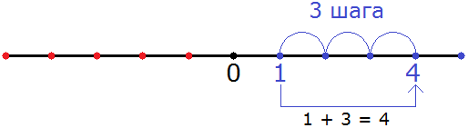
Знак плюса в выражении 1 + 3 указывает нам, что нужно двигаться вправо в сторону увеличения чисел.
Пример 2. Найдём значение выражения 1 − 3
Значение данного выражения равно −2
\[1 - 3 = -2\]
Этот пример опять же можно понять с помощью координатной прямой. Для этого из точки, где располагается число 1 нужно сдвинуться влево на три шага. В результате мы окажемся в точке, где располагается отрицательное число −2. На рисунке можно увидеть, как это происходит:
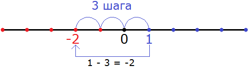
Знак минуса в выражении 1 − 3 указывает нам, что нужно двигаться влево в сторону уменьшения чисел.
Вообще, если осуществляется сложение, то нужно двигаться вправо в сторону увеличения. Если же осуществляется вычитание, то нужно двигаться влево в сторону уменьшения.
Пример 3. Найти значение выражения −2 + 4
Значение данного выражения равно 2
\[-2 + 4 = 2\]
Этот пример опять же можно понять с помощью координатной прямой. Для этого из точки, где располагается отрицательное число −2 нужно сдвинуться вправо на четыре шага. В результате мы окажемся в точке, где располагается положительное число 2
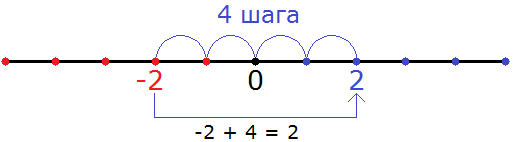
Видно, что мы сдвинулись из точки где располагается отрицательное число −2 в правую сторону на четыре шага, и оказались в точке, где располагается положительное число 2.
Пример 4. Найти значение выражения −1 − 3
Значение данного выражения равно −4
\[-1 - 3 = -4\]
Этот пример опять же можно решить с помощью координатной прямой. Для этого из точки, где располагается отрицательное число −1 нужно сдвинуться влево на три шага. В результате мы окажемся в точке, где располагается отрицательное число −4
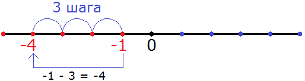
Видно, что мы сдвинулись из точки где располагается отрицательное число −1 в левую сторону на три шага, и оказались в точке, где располагается отрицательное число −4.
Пример 5. Найти значение выражения −2 + 2
Значение данного выражения равно 0
\[-2 + 2 = 0\]
Этот пример можно решить с помощью координатной прямой. Для этого из точки, где располагается отрицательное число −2 нужно сдвинуться вправо на два шага. В результате мы окажемся в точке, где располагается число 0
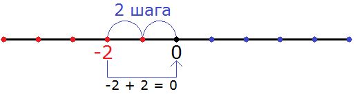
Видно, что мы сдвинулись из точки где располагается отрицательное число −2 в правую сторону на два шага и оказались в точке, где располагается число 0.
Правила сложения и вычитания целых чисел
Чтобы сложить или вычесть целые числа, вовсе необязательно каждый раз воображать координатную прямую, и тем более рисовать её. Можно воспользоваться готовыми правилами.
Применяя правила, нужно обращать внимания на знак операции и знаки чисел, которые нужно сложить или вычесть. От этого будет зависеть какое правило применять.
Пример 1. Найти значение выражения −2 + 5
Здесь к отрицательному числу прибавляется положительное число. Другими словами, осуществляется сложение чисел с разными знаками, потому что −2 это отрицательное число, а 5 — положительное. Для таких случаев применяется следующее правило:
Чтобы сложить числа с разными знаками, нужно из большего модуля вычесть меньший модуль, и перед полученным ответом поставить знак того числа, модуль которого больше.
Итак, посмотрим какой модуль больше:
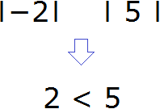
Модуль числа 5 больше, чем модуль числа −2. Правило требует из большего модуля вычесть меньший. Поэтому мы должны из 5 вычесть 2, и перед полученным ответом поставить знак того числа, модуль которого больше.
У числа 5 модуль больше, поэтому знак этого числа и будет в ответе. То есть ответ будет положительным:
\[-2 + 5 = 5 - 2 = 3\]
Обычно записывают покороче: −2 + 5 = 3
Пример 2. Найти значение выражения 3 + (−2)
Здесь как и в предыдущем примере, осуществляется сложение чисел с разными знаками. 3 это положительное число, а −2 — отрицательное. Обратите внимание, что число −2 заключено в скобки, чтобы сделать выражение понятнее. Это выражение намного проще для восприятия, чем выражение 3 + −2.
Итак, применим правило сложения чисел с разными знаками. Как и в прошлом примере, из большего модуля вычитаем меньший модуль и перед ответом ставим знак того числа, модуль которого больше:
3 + (−2) = |3| − |−2| = 3 − 2 = 1
Модуль числа 3 больше, чем модуль числа −2, поэтому мы из 3 вычли 2, и перед полученным ответом поставили знак того числа, модуль которого больше. У числа 3 модуль больше, поэтому знак этого числа и поставлен в ответе. То есть ответ положительный.
Обычно записывают покороче 3 + (−2) = 1
Пример 3. Найти значение выражения 3 − 7
В этом выражении из меньшего числа вычитается большее. Для такого случая применяется следующее правило:
Чтобы из меньшего числа вычесть большее, нужно из большего числа вычесть меньшее, и перед полученным ответом поставить минус.
\[3 - 7 = 7 - 3 = -4\]
В этом выражении есть небольшая загвоздка. Вспомним, что знак равенства (=) ставится между величинами и выражениями тогда, когда они равны между собой.
Значение выражения 3 − 7 как мы узнали равно −4. Это означает, что любые преобразования которые мы будем совершать в данном выражении, должны быть равны −4
Но мы видим, что на втором этапе располагается выражение 7 − 3, которое не равно −4.
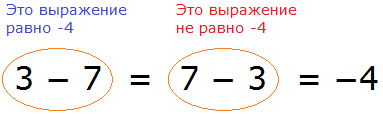
Чтобы исправить эту ситуацию, выражение 7 − 3 нужно взять в скобки и перед этой скобкой поставить минус:
\[3 - 7 = - (7 - 3) = - (4) = -4\]
В этом случае равенство будет соблюдаться на каждом этапе:
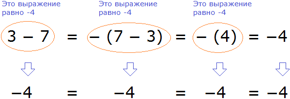
После того, как выражение вычислено, скобки можно убрать, что мы и сделали.
Поэтому, чтобы быть более точным, решение должно выглядеть так:
\[3 - 7 = - (7 - 3) = - (4) = - 4\]
Данное правило можно записать с помощью переменных. Выглядеть оно будет следующим образом:
\[a - b = - (b - a)\]
Большое количество скобок и знаков операций могут усложнять решение, казалось бы совсем простой задачи, поэтому целесообразнее научиться записывать такие примеры коротко, например 3 − 7 = − 4.
На самом деле сложение и вычитание целых чисел сводится только к сложению. Это означает, что если требуется осуществить вычитание чисел, эту операцию можно заменить сложением.
Итак, знакомимся с новым правилом:
Вычесть одно число из другого означает прибавить к уменьшаемому такое число, которое будет противоположно вычитаемому.
Например, рассмотрим простейшее выражение 5 − 3. На начальных этапах изучения математики мы ставили знак равенства и записывали ответ:
\[5 - 3 = 2\]
Но сейчас мы прогрессируем в изучении, поэтому надо приспосабливаться к новым правилам. Новое правило говорит, что вычесть одно число из другого означает прибавить к уменьшаемому такое число, которое будет противоположно вычитаемому.
На примере выражения 5 − 3 попробуем понять это правило. Уменьшаемое в данном выражении это 5, а вычитаемое это 3. Правило говорит, что для того, чтобы из 5 вычесть 3 , нужно к 5 прибавить такое число, которое будет противоположно 3. Противоположное для числа 3 это число −3. Записываем новое выражение:
\[5 + (-3)\]
А как находить значения для таких выражений мы уже знаем. Это сложение чисел с разными знаками, которое мы рассмотрели ранее. Чтобы сложить числа с разными знаками, мы из большего модуля вычитаем меньший модуль, и перед полученным ответом поставить знак того числа, модуль которого больше:
5 + (−3) = |5| − |−3| = 5 − 3 = 2
Модуль числа 5 больше, чем модуль числа −3. Поэтому мы из 5 вычли 3 и получили 2. У числа 5 модуль больше, поэтому знак этого числа и поставили в ответе. То есть ответ положителен.
Поначалу быстро заменять вычитание сложением удаётся не всем. Это связано с тем, что положительные числа записываются без знака плюс.
Например, в выражении 3 − 1 знак минуса, указывающий на вычитание, является знаком операции и не относится к единице. Единица в данном случае является положительным числом, и у неё есть свой знак плюса, но мы его не видим, поскольку плюс перед положительными числами не записывают.
А стало быть, для наглядности данное выражение можно записать следующим образом:
\[(+3) - (+1)\]
Для удобства числа со своим знаками заключают в скобки. В таком случае заменить вычитание сложением намного проще.
В выражении (+3) − (+1) вычитаемое это число (+1), а противоположное ему число это (−1).
Заменим вычитание сложением и вместо вычитаемого (+1) записываем противоположное ему число (−1)
\[(+3) - (+1) = (+3) + (-1)\]
Дальнейшее вычисление не составит особого труда.
(+3) − (+1) = (+3) + (−1) = |3| − |−1| = 3 − 1 = 2
На первый взгляд покажется, какой смысл в этих лишних телодвижениях, если можно старым добрым методом поставить знак равенства и сразу записать ответ 2. На самом деле это правило ещё не раз нас выручит.
Решим предыдущий пример 3 − 7, используя правило вычитания. Сначала приведём выражение к понятному виду, расставив каждому числу свои знаки.
У тройки знак плюса, поскольку она является положительным числом. Минус, указывающий на вычитание не относится к семёрке. У семёрки знак плюса, поскольку она является положительным числом:
\[(+3) - (+7)\]
Заменим вычитание сложением:
\[(+3) - (+7) = (+3) + (-7)\]
Дальнейшее вычисление не составляет труда:
(+3) − (+7) = (+3) + (-7) = −(|−7| − |+3|) = −(7 − 3) = −(4) = −4
Пример 7. Найти значение выражения −4 − 5
Приведём выражение к понятному виду:
\[(-4) - (+5)\]
Перед нами снова операция вычитания. Эту операцию нужно заменить сложением. К уменьшаемому (−4) прибавим число, противоположное вычитаемому (+5). Противоположное число для вычитаемого (+5) это число (−5).
\[(-4) - (+5) = (-4) + (-5)\]
Мы пришли к ситуации, где нужно сложить отрицательные числа. Для таких случаев применяется следующее правило:
Чтобы сложить отрицательные числа, нужно сложить их модули, и перед полученным ответом поставить минус.
Итак, сложим модули чисел, как от нас требует правило, и поставим перед полученным ответом минус:
(−4) − (+5) = (−4) + (−5) = |−4| + |−5| = 4 + 5 = −9
Запись с модулями необходимо заключить в скобки и перед этими скобками поставить минус. Так мы обеспечим минус, который должен стоять перед ответом:
(−4) − (+5) = (−4) + (−5) = −(|−4| + |−5|) = −(4 + 5) = −(9) = −9
Решение для данного примера можно записать покороче:
\[-4 - 5 = -(4 + 5) = -9\]
или ещё короче:
\[-4 - 5 = -9\]
Пример 8. Найти значение выражения −3 − 5 − 7 − 9
Приведём выражение к понятному виду. Здесь все числа, кроме числа −3 являются положительными, поэтому у них будут знаки плюса:
\[(-3) - (+5) - (+7) - (+9)\]
Заменим вычитания сложениями. Все минусы, кроме минуса, стоящего перед тройкой, поменяются на плюсы, и все положительные числа поменяются на противоположные:
\[(-3) - (+5) - (+7) - (+9) = (-3) + (-5) + (-7) + (-9)\]
Теперь применим правило сложения отрицательных чисел. Чтобы сложить отрицательные числа, нужно сложить их модули и перед полученным ответом поставить минус:
\[(-3) - (+5) - (+7) - (+9) = (-3) + (-5) + (-7) + (-9) =\]
= −( |−3| + |−5| + |−7| + |−9| ) = −(3 + 5 + 7 + 9) = −(24) = −24
Решение данного примера можно записать покороче:
\[-3 - 5 - 7 - 9 = -(3 + 5 + 7 + 9) = -24\]
или ещё короче:
\[-3 - 5 - 7 - 9 = -24\]
Пример 9. Найти значение выражения −10 + 6 − 15 + 11 − 7
Приведём выражение к понятному виду:
\[(-10) + (+6) - (+15) + (+11) - (+7)\]
Здесь сразу две операции: сложение и вычитание. Сложение оставляем без изменения, а вычитание заменяем сложением:
\[(-10) + (+6) - (+15) + (+11) - (+7) = (-10) + (+6) + (-15) + (+11) + (-7)\]
Соблюдая порядок действий, выполним поочерёдно каждое действие, опираясь на ранее изученные правила. Записи с модулями можно пропустить:
Первое действие:
\[(-10) + (+6) = - (10 - 6) = - (4) = - 4\]
Второе действие:
\[(-4) + (-15) = - (4 + 15) = - (19) = - 19\]
Третье действие:
\[(-19) + (+11) = - (19 - 11) = - (8) = -8\]
Четвёртое действие:
\[(-8) + (-7) = - (8 + 7) = - (15) = - 15\]
Таким образом, значение выражения −10 + 6 − 15 + 11 − 7 равно −15
Примечание. Приводить выражение к понятному виду, заключая числа в скобки, вовсе необязательно. Когда происходит привыкание к отрицательным числам, это действие можно пропустить, поскольку оно отнимает время и может запутать.
Итак, для сложения и вычитания целых чисел необходимо запомнить следующие правила:
Чтобы сложить числа с разными знаками, нужно из большего модуля вычесть меньший модуль, и перед полученным ответом поставить знак того числа, модуль которого больше.
Чтобы из меньшего числа вычесть большее, нужно из большего числа вычесть меньшее и перед полученным ответом поставить минус.
Вычесть одно число из другого означает, прибавить к уменьшаемому такое число, которое противоположно вычитаемому.
Чтобы сложить отрицательные числа, нужно сложить их модули, и перед полученным ответом поставить минус.
Задания для самостоятельного решения
Показать решение
Показать решение
Показать решение
Показать решение
Показать решение
Показать решение
Показать решение
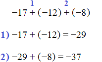
Показать решение
Показать решение
Показать решение
Показать решение
Показать решение
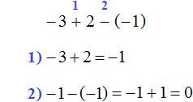
Показать решение
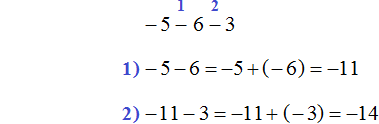
Понравился урок?
Вступай в нашу новую группу Вконтакте и начни получать уведомления о новых уроках